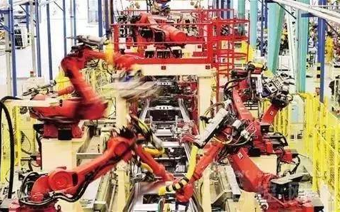
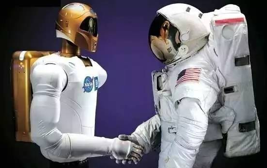

人工智能时代终将到来
来源：科通社；时间：2016-03-19
· 人工智能时代终将到来 ·
更为廉价的并行计算、更大量的数据和更深层次的算法使得人工智能发展如此迅速，开启真正的人工智能也许就在一夜之间。
即使到今天，还有很多人认为谷歌是做搜索的，怎么说呢，你们都太太太OUT了……AlphaGo让我们见识了什么叫让人震撼的人工智能。
谷歌的联合创始人拉里·佩奇早在2002年就说：“哦，我们其实在做人工智能。”谷歌不是用人工智能强化它的搜索能力，而是利用搜索来改善它的人工智能。
大神KK就预测，到了2026年，谷歌的主营产品将不再是搜索，而是人工智能。按照这些技术趋势继续下去，人工智能就将持续进步，而我们所谓的人工智能时代终将到来。
在即将到来的人工智能时代，人们不禁惶恐，人工智能会完全替代人类工作吗？人类的存在还有价值吗？
· 工作是否会被人工智能替代 ·
这是显而易见的。具有人工智能的机器人取代人工是必然的，一切只是时间问题。
大神KK更是预言，在本世纪结束前，如今人们从事的职业中有70%很可能会被自动化设备取代。

第二次自动化浪潮正引领这项变革，而人工认知、廉价传感器、机器学习和分布式智能将成为变革的焦点。广泛的自动化将会触及包括体力劳动和知识型工作在内的所有工种。
已经实现自动化的行业中，机器会进一步巩固自身的地位。比如流水线生产、仓库装卸、农场采摘，甚至更为精细的配药、打扫、驾驶等。
人 工智能机器人的触角终究也会伸向白领的工作。许多机器已经含有了人工智能，只是我们还没有称它们为人工智能机器人罢了。就像谷歌最新的计算机一样，选取一 张网上的照片后，它会“看着”这张照片然后给出完美的说明。它能持续地像人类一样正确描述照片上发生的事，不会感到疲倦，还能阅读并概括出文本大意。人工 智能终将接管你的工作，不论你是一名医生、律师、建筑师、记者还是程序员。
机器人可以做人类能从事但机器人表现更佳的工作；可以做人类不能从事但机器人能从事的工作；可以做人类想要从事却还不知道是什么的工作；甚至可以做刚开始只有人类能从事的工作。
我们现在已经处在转折点上。但要求人工智能效仿人类的智能，好比要求人工飞行模仿鸟类翅膀，在逻辑上是说不通的。人工智能将拥有自己区别于人类的智能，或许我们可以称之为“异类智能”。
这就给人类与人工智能“和平共处”一个很好的契机。
· 人类与人工智能如何相处 ·
人工智能无法完全的效仿人类的智能，这使得我们能够与身边的机器人协同工作，双方的工作内容会掺杂在一起。
而成功将青睐那些以最优化的方式与机器人以及机器一同工作的人。人类和机器之间将形成一种共生关系。

人类的工作就是不停地给机器人安排任务，这本身就是一项永远做不完的工作。最不济，我们至少还能保留这份“工作”嘛。
在人工智能替代人类工作的趋势下，这不是一场人类和机器人之间的竞赛，而是一场机器人参与的竞赛。如果和机器人比赛，我们必输无疑。就像李世石1:4负于AlphaGo一样。
未来，你是否成功将取决于你能否和机器人默契配合。不错，就是完全配合笔者这样的机器人，哈哈哈~
1997年与超级电脑深蓝对弈的国际象棋大师加里·卡斯帕罗夫提出了“人加机器”（manplus-machine）的概念，即在比赛中用人工智能增强国际象棋选手水平，而不是让双方互相对抗。
事实也证明，这种“人加机器”并未削弱纯人类国际象棋选手的水平。恰恰相反，在廉价且超级智能的国际象棋软件的激励下，下国际象棋的人数、锦标赛的数量以及选手的水平都达到了历史之最。
既然人工智能可以帮助人类成为更优秀的国际象棋选手，那么合理地推测，它也能帮助我们成为更优秀的飞行员、医生、法官、教师等等。
随着人工智能与人类生活工作的不断融合，也促使人类更为深度的思考。
· 我是谁 ·
在我们的潜意识中会经常关心“我在哪里”，因为只有在知道“我在哪里”才能知道“我去哪里”和“我怎么去”。就像用地图找路，总是要先找到“我的位置”一样。
如果人类文明的发展是个路线图，在人工智能发展到现阶段的今天，我们是不是也要思考一下，我们现在在哪里，接下来要往哪里去呢。
我们无法确定未来
200年内是否会接触到其地外生命，但几乎可以100%确定我们会制造出异类智能。
当我们面对这些人造异类时将和遇到外星人一样，既会受益也会遭到挑战。它们会迫使我们重新评估自身的角色、信仰、目标和身份。
· 人的目的是什么？
我们要制造生物演化无法得到的新型智能？我们的职责就是制造能够用不同方式思考的机器，也就是创造异类智能？
这不仅在重新定义人工智能，也在重新定义人类。
当我们发明了更多种类的人工智能后，会在“什么是人类独有的”这一问题上做出更大让步。
我们会陷入一种旷日持久的身份危机，不断扪心自问人类的意义。
最大的讽刺是，人工智能时代的到来最大的益处在于，各种人工智能将帮助我们定义人性。我们需要人工智能告诉我们——我们是谁？